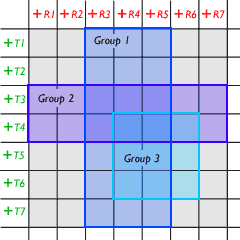

Concepts
meloncillo is constructed based on the following principles:
- separation of graphical user interface (GUI) and sound synthesis engine. in fact, the sound synthesis engine is not part of meloncillo at all, but you will have to use supercollider for example. this implies that meloncillo does not know -- and should not know -- anything about sound synthesis, your audio hardware and signal path etc. this is all left to the plug-ins. however, some compromises were made for a smoother integration, for example all session objects (receivers, transmitters, groups) have solo and mute flags.
- this also implies that different spatialization models can be used with meloncillo. whether you have a group of discrete loudspeakers with intensity panning, or binaural headphone playback, is not hardcoded in the software.
- meloncillo is a single document application, there is always exactly one current session. if you open a session, the current session is replaced etc.
- a session consists of objects. some objects are unique and cannot be created or deleted. for example, each session has a timeline that describes the data rate of the samples and the duration of the session. the session is populated with variable session objects, the two most prominent ones being receivers and transmitters
- receivers are area objects, statically placed in a two dimensional space. their area is described in terms of a sensitivity as a function of space.
- transmitters are point objects, dynamically placed space and time, described by a two dimensional trajectory.
- receivers and transmitters form a matrix which can be interpreted in different ways. the classical model assumes that receivers represent audio output channels (or loudspeakers) and that transmitters describe mono sound sources being moved around in the sound field and distributed dynamically through the output channels (receivers). this view is not hardcoded.
- sub-matrices can be created and are called groups. a group is an ensemble of receivers and transmitters. the elements of this ensemble are always elements of the main matrix (shown gray shaded in the picture), however different groups or sub-matrices can overlap, as depicted below:

- sound synthesis processes can be based upon stream data. stream data can be either the trajectory of a transmitter or the sensitivity of a receiver being scanned by a transmitter's trajectory. this data is sampled at equal intervals, by default 1000 times per second, and can be transmitted to the sound synthesis application through the open sound control (OSC) protocol.
- for example, in classical discrete loudspeaker intensity panning, the panning law is described by the sensitivity tables of the receivers, and receivers are placed in an overlapping way, such that the sum of neighbouring receiver's sensitivities is always zero decibels in terms of equal power summing. then a moving sound source can be modelled by a transmitter trajectory that moves from the center of one receiver to that of the neighbouring receiver, acoustically resulting in a socalled phantom sound source.
- meloncillo defines three kinds of plug-ins: trajectory filtering, offline bouncing and realtime synthesis. plug-ins for all of these interfaces can be written using lisp scripts that bridge meloncillo and an external synthesis software such as supercollider or csound.
- sessions can be saved and restored. the session contains all the objects, the sensitivity tables and transmitter trajectories. while working on the project, the sound synthesis can be previewed with a realtime plug-in. once the project is complete, autonomous audio files can be created through a process called bouncing. the bounced audio files incorporate all the spatialization, for example panning between channels or binaural convolution. they can then be used in another application such as protools.